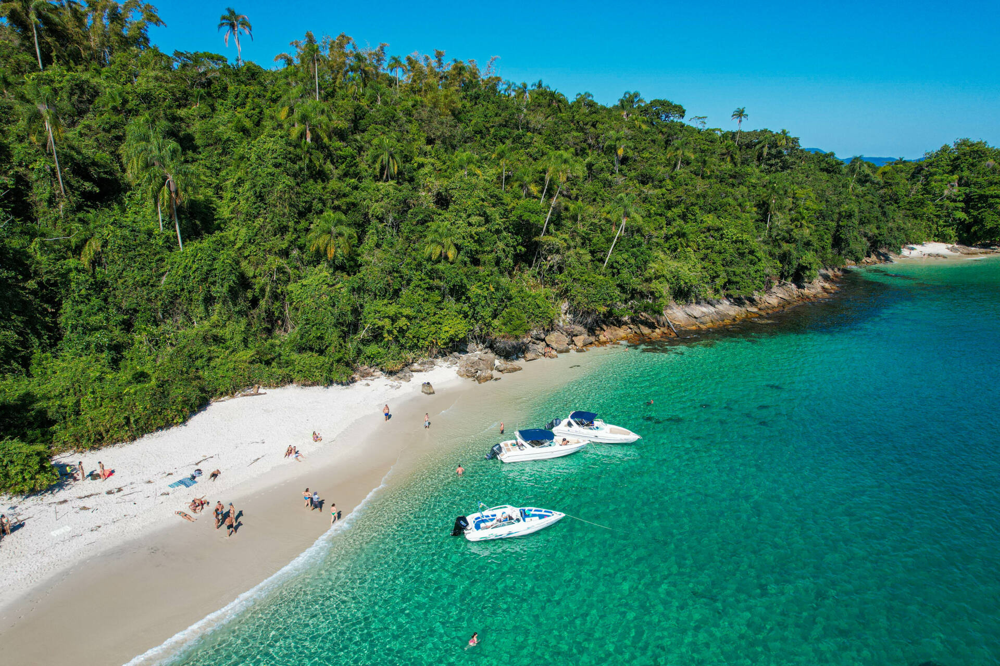
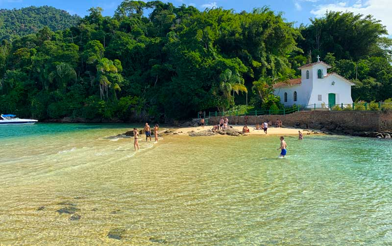
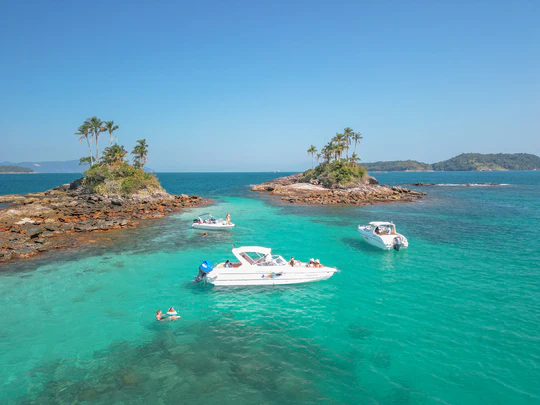

I Encontro de Integração Acadêmica de Odontologia – Angra dos Reis
Convidamos os alunos e o corpo docente do curso de Odontologia para uma experiência exclusiva de networking, lazer e integração na célebre Praia do Dentista, em Angra dos Reis.
Este evento foi planejado para proporcionar um ambiente descontraído e sofisticado, ideal para fortalecer os vínculos acadêmicos e profissionais fora do ambiente universitário.
🔥 O que está incluso na sua experiência:
- Transporte Executivo (Ida e Volta): Viagem de ida e volta em transporte privativo e de alto padrão, garantindo total conforto e segurança para alunos e professores.
- Serviço de Bordo Premium: Bebidas inclusas durante o evento para maior comodidade e bem-estar dos participantes.
- Destino Exclusivo: Acesso à Praia do Dentista, um dos cenários mais paradisíacos e reservados do litoral fluminense.
📋 Informações Gerais:
- Público-Alvo: Evento fechado e exclusivo para estudantes e professores de Odontologia.
- Data: [31/10]
- Horário de Saída: [21:30]
- Local de Partida: [ung]
Nota: Por razões de logística e para garantir a excelência do serviço prestado, as vagas para este encontro são estritamente limitadas.
💳 Inscrições e Reservas:
Para garantir a sua participação ou obter mais informações sobre valores e formas de pagamento, por favor, entre em contato com a comissão organizadora pelo número 11939160198

⛵ Roteiro Oficial: Circuito Ilhas Paradisíacas & Praia do Dentista
Prepare-se para um dia inesquecível a bordo da nossa escuna exclusiva. Abaixo, detalhamos o cronograma do nosso itinerário náutico pelas águas cristalinas de Angra dos Reis e Ilha Grande.
🕒 – Embarque e Partida
Local: Porto de Angra dos Reis.
Atividade: Recepção dos alunos e professores, procedimentos de embarque e orientações de segurança pela tripulação. Partida pontual darmos início ao circuito.
🏝️ – Navegação e Circuito Ilhas Paradisíacas
Atividade: Início da navegação pelas ilhas mais belas da região. Durante o percurso, o serviço de bebidas a bordo estará ativo, permitindo que todos desfrutem da paisagem e do networking em um ambiente descontraído.
Nota: Faremos paradas estratégicas em pontos cênicos para contemplação e fotos da comunidade acadêmica.
🏖️ – Parada Principal: Praia do Dentista (Ilha da Gipóia)
Atividade: Chegada ao destino principal do nosso evento. Uma das praias mais sofisticadas e famosas de Angra, com águas calmas e transparentes.
Tempo de Permanência: Tempo livre para banho de mar, descanso na areia e integração entre o corpo docente e os acadêmicos.
🍽️ – Parada para Almoço: Ilha Grande
Local: Restaurante selecionado na Ilha Grande (à beira-mar).
Atividade: Desembarque para o almoço. Uma pausa excelente para desfrutar da gastronomia local e recarregar as energias.
Aviso: O consumo no restaurante é opcional e individual (por adesão).
🌅 – Retorno e Pôr do Sol a Bordo
Atividade: Embarque de retorno em direção ao continente. Aproveitaremos o fim de tarde na baía de Angra, um momento perfeito para encerrar o evento com chave de ouro.
⚓ – Desembarque
Local: Porto de Angra dos Reis.
Atividade: Encerramento oficial do passeio náutico e retorno ao transporte rodoviário executivo.
📋 Recomendações importantes para o dia:
- Utilize protetor solar e repelente.
- Leve trajes de banho, toalha e uma troca de roupa seca.
- Mantenha seus pertences eletrônicos protegidos da água.
Os horários acima são estimados e podem sofrer leves alterações de acordo com as condições climáticas e de navegação no dia do evento.
